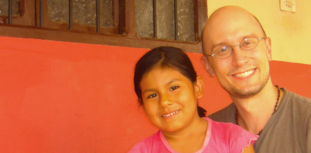
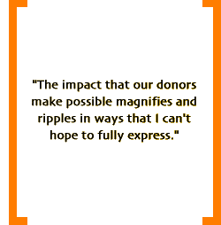

|
Jonathan Melk, MD Other officers and board members

Jonathan Melk, MD - Founder and Director, Treasurer
I first traveled to Montero, Bolivia, as a medical student in 2003, where I had my first opportunity to work with our current Bolivian partner, the Consejo de Salud Rural Andino. I was truly inspired by the dedicated leadership and work of the CSRA, and astounded by what could be accomplished with limited funds in Bolivia. Therefore, during the second year of my residency training – and with the generous support and encouragement of family and friends-- I founded the Rosa Vera Fund in April, 2005. The RVF has been an integral, challenging and tremendously rewarding part of my life ever since. I feel deeply grateful to the RVF’s Board, to the CSRA, and most of all, to those who have offered their support for the RVF and made our important work possible.
When not working on the RVF, I am medical director of the Southern Arizona Children’s Health Project and a full-time community pediatrician for the nonprofit organization Chiricahua Community Health Centers, Inc. that serves the rural southeastern Arizona/ Mexico borderlands. I absolutely love my career as a pediatrician. Whenever possible, you will find my lovely wife and me exploring the deserts and mountains of the Southwest. Meet the other board members.
|

Education
Bachelor of Science
Northland College, Wisconsin
Premedical Post-Baccalaureate
City College of New York, New York
Medical School
Weill Medical College of Cornell University, New York
Pediatric Residency
Phoenix Children’s Hospital/ Maricopa Medical Center Pediatric Residency Training Program, Arizona
|
|